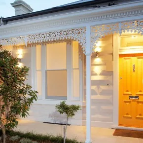

Heritage Home Painting in Adelaide — The Complete 2026 Guide

Adelaide is home to some of Australia's finest heritage architecture — from the limestone cottages of Gawler to the bluestone villas of North Adelaide and the Federation bungalows of Norwood. Painting a heritage home is fundamentally different from a standard repaint. Get it wrong and you risk council fines, structural damage, and paint failure within 2 years. Get it right and you'll enhance the historic character for decades.
In this guide
1. Do You Need Council Approval? (SA Regulations)
If your property is heritage-listed, you almost certainly need council approval before painting the exterior. This surprises many Adelaide homeowners — they assume a same-colour touch-up is minor maintenance. But under SA planning law, it can be a development application.
📋 SA Heritage Approval — Key Facts
If you're in Gawler — one of SA's most significant heritage precincts — contact Town of Gawler planning staff first. City of Port Adelaide Enfield also requires development approval for painting work that could materially affect heritage value.
2. The 5 Biggest Heritage Painting Mistakes
⚠️ These Cause Permanent Damage
- Painting over original sandstone, limestone or brickwork. Once sealed, stonework is virtually impossible to reverse. Trapped moisture causes salt damp and irreversible spalling of the stone surface.
- Using modern acrylic directly on lime render. Historic lime render is breathable by design. Sealing it traps moisture and causes bubbling, peeling, and salt damp migration.
- High-pressure washing heritage surfaces. Water pressure damages soft lime mortar, dislodges stones, and strips original render profiles. Heritage surfaces need gentle hand cleaning only.
- Choosing modern colours without checking originals. Many heritage councils will require reversal at your cost if you apply a colour incompatible with the property's heritage value.
- Using high-gloss on render or masonry. Gloss looks wrong on heritage surfaces and can trap moisture — masonry requires a breathable film.
3. Period-Correct Colours by Architectural Era
Colour is the most scrutinised part of any heritage repaint. Here are historically appropriate palettes for the most common heritage home styles in Adelaide:
All major paint manufacturers offer heritage ranges for Australian period homes. Dulux Heritage, Haymes Heritage Colours, and Taubmans Heritage are excellent starting points. Bring colour chips to your heritage advisor before committing.
4. The Right Paint Systems for Heritage Surfaces
| Surface | Recommended System | Products |
|---|---|---|
| Lime render | Breathable mineral silicate or limewash. Never standard acrylic directly on old lime render. | Dulux Limewash, Haymes Breathe Easy |
| Cement/acrylic render | Primer + 2 coats premium exterior acrylic — standard system fine here. | Dulux Weathershield, Haymes Permalite |
| Timber weatherboard | Oil primer + 2 coats quality enamel. Thorough caulking of all joints essential. | Dulux Aquanamel, Haymes Ultra Premium |
| Doors, windows, trims | Quality enamel (gloss). Oil-based preferred for sun-exposed doors. | Dulux Weathershield Trim, Haymes Gloss |
| Iron lacework | Rust inhibiting primer (Rustguard) + 2 coats gloss. All rust removed to bare metal first. | Dulux Rustguard + Enamel |
| Sandstone / bluestone | Avoid painting where possible. If previously painted, use breathable masonry systems only — consult a heritage advisor first. | Specialist conservation products |
5. Why Heritage Preparation Takes Longer (and Costs More)
Heritage homes require 40–60% more preparation time than a standard repaint. Key reasons:
- Lead paint testing and removal. Pre-1970 homes almost always contain lead paint. SA requires painters to follow specific SWMS procedures — wet sanding, respiratory protection, proper waste disposal.
- Identifying and treating salt damp. Heritage render frequently shows salt damp. Painting over it causes complete paint failure within months. Treatment means removing affected render and fixing the moisture source first.
- Careful caulking. Weatherboards and window frames need flexible, paintable caulking — but only where original joins were sealed, to avoid trapping moisture elsewhere.
- Gentle surface cleaning. Hand-cleaning or very low-pressure washing only — never high-pressure blasting on lime, sandstone, or render profiles.
6. How to Find a Qualified Heritage Painter in Adelaide
Not every Adelaide painter has heritage experience — and the consequences of poor work are far more serious than a standard repaint. Ask:
- Can you show examples of heritage homes you've painted — same period and style as mine?
- Are you familiar with SA heritage approvals and council DA processes?
- Do you have a SWMS for lead paint disturbance?
- What paint system do you recommend for my specific surface — and why?
- How will you identify and treat salt damp before painting?
M&K Painting Services regularly works on heritage homes in Gawler — one of SA's most significant heritage precincts. We understand the Town of Gawler's requirements and the specific challenges of limestone cottages, Federation bungalows, and Victorian villas.
Heritage Home in Adelaide? Get Expert Advice.
M&K has 20+ years of experience with SA heritage homes. We understand the regulations, the right paint systems, and how to do it properly.
Related: How to Choose a Commercial Painter in Adelaide | Residential Painting in Adelaide's Western Suburbs